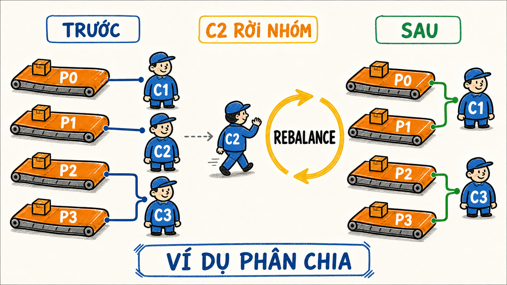

Group
Giải thích được cùng group và khác group ảnh hưởng đến delivery thế nào.
Hiểu cách Kafka chia partition cho nhiều consumer, tại sao consumer dư phải ngồi chờ, offset thuộc về group nào và điều gì xảy ra khi một instance Spring Boot dừng.
Giải thích được cùng group và khác group ảnh hưởng đến delivery thế nào.
Tính được consumer nào có thể sở hữu bao nhiêu partition.
Dự đoán điều gì thay đổi khi consumer join, leave hoặc timeout.
Chạy nhiều Spring Boot instance và chứng minh bằng log/CLI.
Trong cùng một consumer group, một partition tại một thời điểm chỉ có một consumer owner. Một consumer có thể sở hữu nhiều partition.

P2 không thể đồng thời thuộc C1 và C2 nếu họ cùng group.
4 partition chỉ có tối đa 4 consumer active cho group đó tại một thời điểm.
Inventory đọc tới offset 10 không đẩy Analytics tới offset 10.
| Topology | Kết quả | Ý nghĩa |
|---|---|---|
| 4 partitions, 1 consumer | Consumer sở hữu cả 4. | Không có xử lý song song giữa nhiều consumer instance. |
| 4 partitions, 2 consumers | Mỗi consumer thường nhận khoảng 2. | Tăng parallelism, assignment cụ thể phụ thuộc assignor/protocol. |
| 4 partitions, 4 consumers | Mỗi consumer có thể nhận 1. | Đạt trần parallelism của group với topic này. |
| 4 partitions, 5 consumers | Ít nhất 1 consumer idle. | Thêm instance không tạo thêm partition. |
Mô phỏng dùng round-robin đơn giản để minh họa invariant. Kafka thật có Range, RoundRobin, Sticky, Cooperative và consumer protocol mới.
Tạo record trong P0, sau đó cho Inventory và Analytics đọc với tốc độ khác nhau. Hai con trỏ không kéo nhau đi.
Hãy produce ít nhất 3 record.
Consumer join/leave/timeout hoặc partition của topic thay đổi.
Nhóm cần cập nhật ownership của các partition.
Một số partition được giữ lại hoặc chuyển owner tùy protocol/assignor.
Owner mới tiếp tục đọc từ vị trí hợp lệ của group.
Mental model: rebalance là thay đổi ánh xạ partition → consumer. Hãy học invariant này trước, chưa cần thuộc gói tin protocol.
Dùng một Maven project Java 21 mới. Không thêm Kafka dependency: mục tiêu là luyện List, Map, vòng lặp và reasoning.
Trong project, tạo source code dưới src/main/java và test dưới src/test/java.
Tạo src/main/java/com/dream/learning/kafka/group. Không sửa package order.
Tự viết record TopicPartition(String topic, int partition). Xác định trước điều kiện hợp lệ cho partition.
Method nhận danh sách partition và consumer ID; trả về Map<String, List<TopicPartition>>. Chưa viết thuật toán trong bước này.
public final class RoundRobinAllocator {
public Map<String, List<TopicPartition>> assign(
List<TopicPartition> partitions,
List<String> consumerIds) {
// TODO 1: validate input
// TODO 2: tạo entry rỗng cho mọi consumer
// TODO 3: phân partition theo vòng tròn
throw new UnsupportedOperationException("learner implementation");
}
}Với P0–P3 và C1–C3, viết assignment mong đợi. Xóa C2, viết assignment mới. Sau đó mới dùng công thức partitionIndex % consumerCount.
In assignment trước và sau khi bỏ C2. In riêng các partition đổi owner. Không dùng thread ở bài này.
0 consumer, consumer trùng ID, partition rỗng, nhiều consumer hơn partition. Bạn phải quyết định throw exception hay trả map rỗng và giải thích lý do.
Tạo project riêng D:\2027\dream\kafka-consumer-group-lab để không biến project Java nền tảng thành Spring Boot quá sớm.
Dùng Spring Initializr, Maven, Java 21 và dependency Spring for Apache Kafka. Có thể thêm Spring Web để tạo endpoint phát event. Chọn bản Spring Boot stable tương thích tại thời điểm tạo.
Giữ Kafka từ bộ Docker hiện có và xác nhận broker truy cập được tại localhost:9092. Cấu hình bằng biến môi trường để mỗi instance có identity riêng.
spring:
kafka:
bootstrap-servers: ${KAFKA_BOOTSTRAP_SERVERS:localhost:9092}
consumer:
group-id: ${APP_GROUP:inventory}
auto-offset-reset: earliest
app:
instance-id: ${APP_INSTANCE:C1}
topic: orders.v1Dùng NewTopic/TopicBuilder hoặc Kafka CLI. Với môi trường một broker, replication factor là 1; nếu cluster của bạn có ba broker thì có thể dùng 3.
// TODO: tạo @Bean NewTopic tên "orders.v1"
// partitions = 4
// replicas phù hợp số broker đang chạyKhông chỉ nhận String. Nhận ConsumerRecord<String,String> để log instance, thread, partition, offset, key và value.
@KafkaListener(topics = "${app.topic}")
void on(ConsumerRecord<String, String> record) {
// TODO: log app.instance-id
// TODO: log Thread.currentThread().getName()
// TODO: log partition, offset, key, value
}Mở ba PowerShell. Dùng cùng APP_GROUP=inventory, đổi port và instance.
# Terminal 1
$env:SERVER_PORT=8081
$env:APP_INSTANCE="C1"
$env:APP_GROUP="inventory"
mvn spring-boot:run
# Terminal 2: dùng 8082 / C2 / inventory
# Terminal 3: dùng 8083 / C3 / inventoryDùng endpoint producer từ Module 1–2 hoặc Kafka console producer. Chọn 4 key khác nhau và ghi dự đoán partition trước khi gửi.
Không kết luận chỉ vì nhìn một dòng log. Mô tả group và lưu kết quả trước/sau.
kafka-consumer-groups \
--bootstrap-server localhost:9092 \
--describe --group inventoryDừng C2 bằng Ctrl+C. Trước khi dừng, dự đoán C1/C3 sẽ nhận thêm bao nhiêu partition. Chạy lại lệnh describe sau khi group ổn định.
Chạy C4 với APP_GROUP=analytics. Với auto-offset-reset=earliest và group mới, quan sát Analytics đọc stream theo offset riêng.
Instance nào xử lý P0, P1, P2, P3 trước và sau khi C2 dừng?
Owner mới tiếp tục ở offset nào? Có record nào được đọc lại trong thử nghiệm?
Nếu chạy consumer thứ 5 cùng group với 4 partition, instance nào không nhận record?
Thread.sleep() để “sửa” rebalance. Nếu listener xử lý lâu hơn max.poll.interval.ms, hãy hiểu poll loop, batch size và thời gian xử lý trước khi tăng timeout.concurrency=6 có giúp topic 3 partition nhanh gấp đôi concurrency=3 không?Giải thích tình huống: orders.v1 có 4 partition, C1/C2/C3 cùng group inventory; C2 bị kill; C4 thuộc group analytics vừa khởi động.